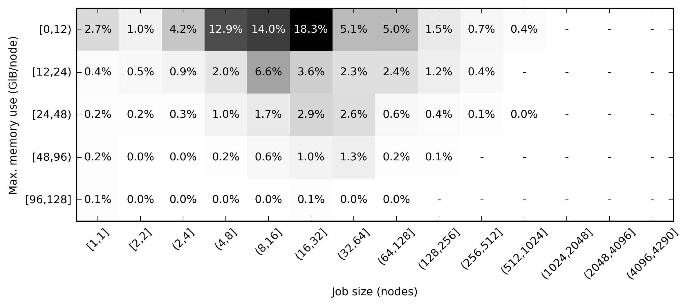

ARCHER Update
Andy Turner, EPCC
20 December 2017
a.turner@epcc.ed.ac.uk
ARCHER Status
- SAFE reporting information substantially expanded:
- Job memory and energy use
- Application use information
- Process/thread placement information
- Using benchmarks to compare peformance of ARCHER and Tier-2 systems (more later)
- Final eCSE call closed - 881 person months assigned over all eCSE projects (target: 840)
- Demand for resources continues to be high
- /work disk space allocations now more restricted due to demand
MCC Application Use
2017 so far
Memory Use
Benchmarking
Initial results
Benchamrks
- Applications:
- CASTEP: Al Slab (medium) and DNA (large)
- CP2K: Hybrid functional, LiH
- GROMACS: Large biological system
- OpenSBLI: Taylor-Green vortex
- OASIS: Coupled Met Office UM and NEMO
- Synthetic:
- HPC Challenge (floating point, memory, interconnect)
- benchio (parallel file system bandwidth)
- mdtest (parallel file system metadata)
Systems Included
| System | Processor | Memory | Interconnect |
|---|---|---|---|
| ARCHER | 12-core Xeon v2, 2.7 GHz | 4 channel DDR3 | Cray Aries |
| Cirrus@EPCC | 18-core Xeon v4, 2.1 GHz | 4 channel DDR4 | FDR Hypercube |
| Thomas@MMMHub | 12-core Xeon v4, 2.1 GHz | 4 channel DDR4 | OPA |
| Athena@HPC-Mid+ | 14-core Xeon v4, 2.4 GHz | 4 channel DDR4 | EDR |
| CSD3@Cambridge | 16-core Xeon Skylake, 2.6 GHz | 6 channel DDR4 | OPA |
Future Work
- Include non-CPU systems (GPGPU: JADE, CSD3-GPU; KNL: CSD3-KNL)
- Include ARM64 Isambard@GW4 once it is available
- Profile benchmarks to get better understanding of performance differences
- Generate results for synthetic benchmarks to understand differences between systems
- Produce initial report comparing systems and benchmarks
Acknowledgements
- SAFE development team: integration of application and memory data
- Tier-2 centres: generous donation of time and willingness to share results publicly
- Research councils: funding CSE team to undertake this work